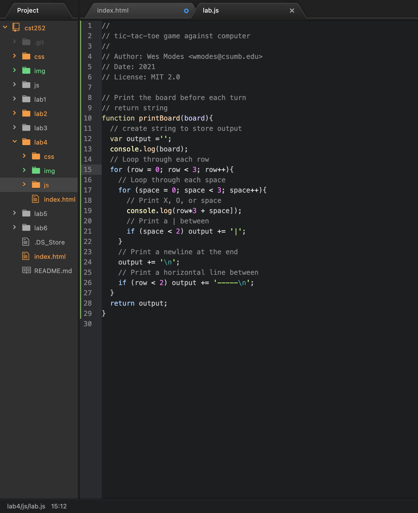
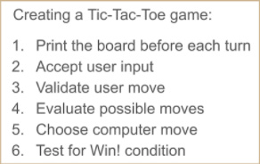

Lab 4: Pseudocoding and Problem-Solving
For this lab we are to get in the habit of thinking in terms of pseudocoding before jumping into coding.
Challenges
I do have small experience of using Javascript, but this did not ring many
bells on how it works. When
turning the JavaScript psuedocode into actual
code I was confused. When reading through the lines
of code the functions
made more sense and my partner helped me understand how each line
worked
and what they did.
Results
I have included the Psuedocode for the Tic-Tac-Toe game and our JS file.

